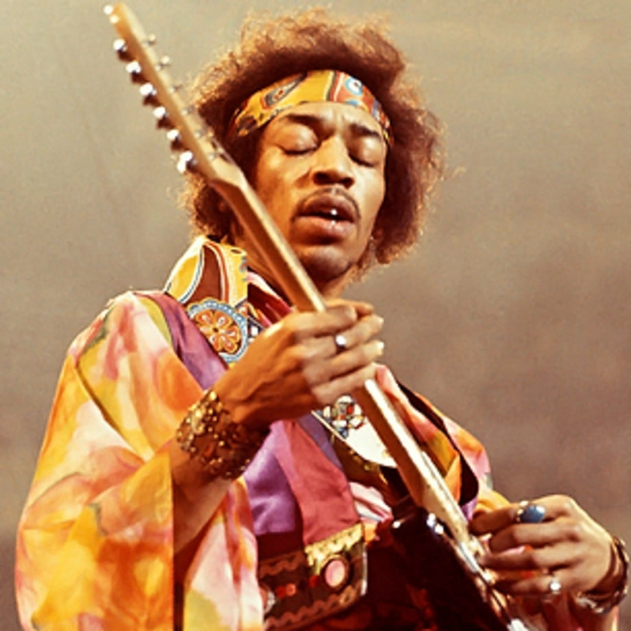
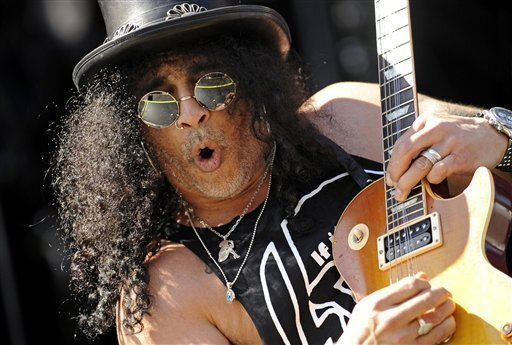

Nationalité : États-Unis
Groupe : The Jimi Hendrix Experience
Genre musical : Rock, Blues, Jazz
Jimi Hendrix
1942-1970
Nationalité : États-Unis
Groupe : The Jimi Hendrix Experience
Genre musical : Rock, Blues, Jazz

Nationalité : Royaume-Uni
Groupe : Guns N' Roses
Genre musical : Hard rock, blues rock, heavy metal
Slash (Saul Hudson)
1965 (56 ans)
Nationalité : Royaume-Uni
Groupe : Guns N' Roses
Genre musical : Hard rock, blues rock, heavy metal
Carlos Santana
1947 (74 ans)
Nationalité : Mexique
Groupe : Santana Blues Band
Genre musical : Blues rock, jazz fusion, rock latino